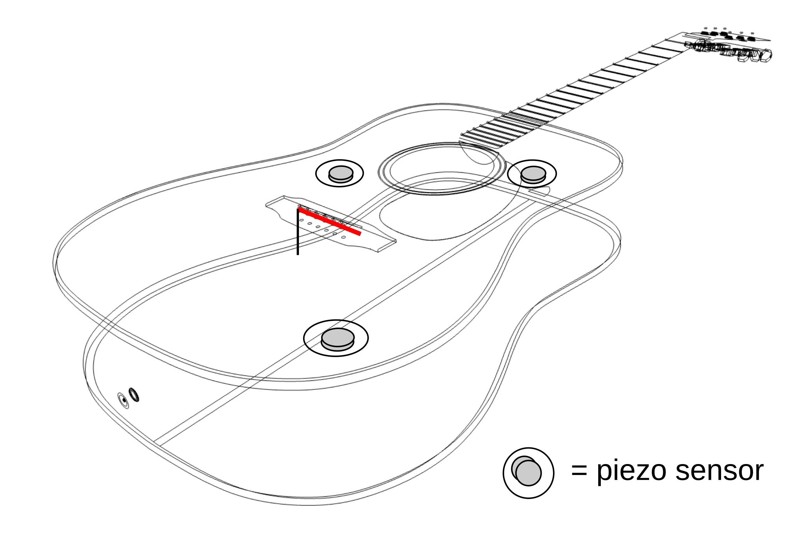
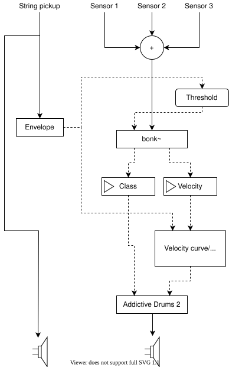

Guitar augmentation for Percussive Fingerstyle: Combining self-reflexive practice and user-centred design
Abstract
What is the relationship between a musician-designer's auditory imagery for a musical piece, a design idea for an augmented instrument to support the realisation of that piece, and the aspiration to introduce the resulting instrument to a community of like-minded performers? We explore this NIME topic in the context of building the first iteration of an augmented acoustic guitar prototype for percussive fingerstyle guitarists. The first author, himself a percussive fingerstyle player, started the project of an augmented guitar with expectations and assumptions made around his own playing style, and in particular around the arrangement of one song. This input was complemented by the outcome of an interview study, in which percussive guitarists highlighted functional and creative requirements to suit their needs. We ran a pilot study to assess the resulting prototype, involving two other players. We present their feedback on two configurations of the prototype, one equalising the signal of surface sensors and the other based on sample triggering. The equalisation-based setting was better received, however both participants provided useful suggestions to improve the sample-triggering model following their own auditory imagery.
Author Keywords
Augmented guitars, percussive fingerstyle, acoustic guitar, research as practice, self-reflexive practice, evaluation study
CCS Concepts
•Applied computing~Arts and humanities~Performing arts•Applied computing~Arts and humanities~Sound and music computing•Human-centered computing~Human computer interaction (HCI)~Interactive systems and tools
Introduction
In the NIME community, seminal self-reflective papers from innovative performers/practitioners helped establish a community of researchers which then rediscovered its identity as a practice [1]. We reflect on the relationship between practice-as-research and a user-centred design in NIME research, and specifically in instrument augmentation.
We present the case study of the development of an augmented guitar for percussive fingerstyle players. This technique involves a mixture of string plucks, taps, slaps and rhythm patterns on the guitar’s body to produce layered, complex arrangements giving the impression of a full pop or rock band [2]. The percussive fingerstyle community’s openness to experimentation and appropriation (in the HCI sense [3]) made us want to involve practitioners in a co-design effort. The first author, who had planned to use the resulting instrument to aid his own percussive fingerstyle practice, complemented the input from the community with expectations coming from his self-reflexive research. In this paper we present the evaluation study that we ran to investigate the result of this blended approach.
Background
Prior work on augmented guitars
Our project aims to build upon the lineage of augmented guitars trying to harness the spare bandwidth of guitar gestures, a concept introduced by Cook [4] [5]. Sukroso’s ACPad [6] and Benincaso’s Sensus Smart Guitar [7] introduce on-body tactile surfaces and on-neck stripe sensors to control external events in a Digital Audio Workstation. Ancillary gestures, those that would normally not produce any sound by themselves [8] are most notably explored in Meneses’s GuitarAMI [9] and in Morreale et al.’s MagPick [10]. The most closely related projects to the one we are presenting are Lähdeoja’s percussive electric guitar [11] and Stefani et al.’s classification of guitar hits [12]. These projects are mostly the individual effort of researchers-practitioners, or they have involved other practitioners at the evaluation stage, such as in the case of the MagPick or Turchet/Barthet’s Smart Guitar [13]. However, we would like to investigate how the design of augmented guitars can learn from a well-established theme in Digital Musical Instruments (DMI): the process that goes from self-reflexive practice into acceptance by the wider community of artists, or the problem of the second performer (after McPherson [14]).
From practice-as-research to community evaluation
Practice-as-research is related to the idea of research through design in Human-Computer Interaction, described for example by Gaver [15] as the inference of generalisable principles from a set of design artifacts. The specific concept of self-reflexive practice describes the idea of "enter[ing] into the complex cycles of action present during practice that have culminated in the developed artefact" [16]. We can find two significant advantages of research through practice/design. One, as Gaver suggests, is its effectiveness in pre-paradigmatic research, where a body of accepted laws or agreed standards of importance cannot be established by current knowledge [15]. The second is Carey and Johnston's so-called "bricolage" approach to research, in which there is quick feedback on the design, as evaluation and prototyping are brought forward in parallel by the same person or the same group of people [16]. The community can be involved during the evaluation [14] or at an earlier stage: co-design studies such as Turchet and Barthet's Smart Cajón [17] collect functional and creative requirements from the likely target audience of the instrument, and the same community evaluates following stages of the design.
The authors' prior work
Our study took percussive fingerstyle guitarists as the target community for our augmented guitar design. We started with the ethnographic description of percussive fingerstyle as an example of appropriation of a traditional instrument, and as a type of material-oriented virtuoso practice in which the instrument shapes the practice by virtue of its affordances and constraints [2]. Inspired by a co-design approach, we ran an interview study with percussive fingerstyle players, and we collected their viewpoint on an ideal augmented guitar from a functional and creative perspective. The two main outcomes of the interviews were a desire for greater dynamic range in percussive hits and a means to separate different techniques and process them differently.
The first author's idea of an augmented guitar prototype, however, was originally driven by a series of percussive arrangements of popular songs, in particular a cover of the song Jóga by Björk.
The author’s arrangement of Björk - Jóga for acoustic guitar.
Although percussive techniques allow a satisfactory reproduction of the sombre, pounding backbeat of the song, a purely acoustic guitar lacks the timbral variety and the dynamic richness of an actual drum track. The main author started off with a number of tacit preferences: that the most useful information for the augmented instrument would come from the body rather than the strings; that the acoustic quality of the body hits' sound needed not be preserved; that the main purpose of the augmentation was to make the backbeat (the main set of accents of a beat) richer and closer to the timbre of the reference song.
Design of the prototype


Figure 1: Sensor positioning on the augmented guitar prototype.
Our first augmented guitar prototype was built between September and November 2020. Following from the suggestions of our interview study’s participants, we aimed to test different technical solutions to the problem of reduced dynamic range of body taps, while also providing a platform for data acquisition to be used for the separation of techniques at a later stage. The main hardware consists of a Framus Grand Auditorium steel-string acoustic guitar modified with a magnetic string pickup and three 3/4" piezo disc sensors (Figure 1), fed through high-capacitance piezo preamps [18] and into a PC running Ableton Live.
Assumptions informing the prototype's design were made starting from the interview study participants' input and the observation of their gestures during recorded performances:
All percussive gestures start with a contact either with the strings or with the body, therefore they have an acoustic onset to be detected.
Percussive interaction happens in three zones: around the soundhole, on the upper-right bout and the lower-right bout.
There is a family of gestures, such as wrist hits, that can be classified as "kick", whereas the others loosely have the function of either "snare" or accents.
Throughout the development, however, those requirements were blended, knowingly or unknowingly, with the main author's assumptions around their own practice, and especially that the purpose of the augmentation would be to reinforce a backbeat with a sound that is not necessarily related to the guitar’s acoustics. The outcome of this development phase was a sample triggering algorithm based on the Max/MSP object bonk~ [19] with onset detection, loudness estimation and a classifier discriminating between kick-like gestures made with the wrist and all other gestures, based on their spectral shape (Figure 2). The intention was to associate kick-like gestures to a bass drum sound, and other gestures to a snare sound.


Figure 2: Simplified signal chain of the Max For Live sample triggering patch. Solid arrows represent signals, dotted arrows represent numbers.
We also created a configuration with Ableton Live’s in-built digital audio effects on each of the three sensors: dynamic compression, saturation and equalisation. During early prototype testing, we found that our sensors were good at picking up impact force; however, most of that force was infrasonic. Saturation and compression were used to, respectively, push the frequency content of that energy into the audible spectrum, and make the energy "felt" through envelope manipulation.
The measured system latency was 10 ms, with ~1 ms jitter for the sample-triggering setting. This should satisfy the constraints outlined in McPherson et al. [20] regarding action-to-sound latency in real-time audio systems.
Design of the study
A small-scale pilot study was planned to compare the prototype in three settings: the acoustic guitar picked up by two mid-side condenser microphones, the setting with production effects (EQ setting for brevity) and the sample triggering configuration. All settings had the same reverb effect in the main output bus.
Two participants, one female and one male, were involved in the study. They were invited to attend a one-hour evaluation session, in which they would play and hear each prototype setting through the same headphones in real time. For each setting, they had a 5-minute hands-on familiarisation with the prototype, followed by a semi-structured interview; they were then asked to perform a percussive piece, the same on all settings, followed by another semi-structured interview. A final wrap-up discussion was meant to compare each setting and reflect on the experience.
The interviews were transcribed and the content was divided into topics, roughly following the approach of thematic analysis. The theme of dynamic range had its own specific question, whereas all other themes were inferred from patterns in the participants’ comments. The result of this analysis is shown by the table in the next section.
Results from pilot study
Acoustic | EQ | Sample Triggering | |
|---|---|---|---|
Initial impact | Higher than expected action, wide neck (P1,2) | Looking for location of sensors by tapping the body (2) | Looking for patterns, e.g. hit localisation (1, 2) |
Haptic feedback | Gloss finish not ideal (1) | Enhanced effect when hitting directly on the sensors (1) | Unfamiliar, unexpected (1, 2); “Hey drummer, what are you doing!” (1) |
Attention/focus | Familiarisation with body’s timbre (2) | Focus on subtlety of drumming (1) | Adapting technique to control samples (1, 2); “Distracting” (1) |
Dynamic range | Increased, especially on quiet parts (1) | Inconsistent, difficult to control (1, 2) | |
Timbre | Clear, “projecting” (2) | “Informative” (2), deeper, offering more support (1) | Not coherent with guitar and not as varied as the guitar’s (1) but supporting backbeats (2) |
Creativity support | Enhanced drumming sound can be a practice tool (1) | A song can be written for it (2) |
The first part of the session was dedicated to the evaluation of the prototype guitar as an acoustic instrument with no augmentation. Both participants reported a higher than expected neck action (the distance between strings and fretboard). Participant 1 was used to having a satin finish rather than a gloss finish on the body, which allows scraping gestures on the guitar's top. P2 was used to slimmer, narrower necks than the one of the prototype. He also tapped the body several times to construct a map of sounds of the acoustic instrument, compared to the ones they were familiar with on their own guitar.
The EQ setting was very well received. Both participants noted how the use of contact sensors gave a "crispness" and timbral richness to body percussion. Both confirmed an increase in the perceived dynamic range of hits, describing them as "popping out", especially the quieter hits that were already highlighted as problematic on purely acoustic guitars in our prior study. It was easier for them to focus on the “subtlety” and the “nuance” (P1) of the percussion (P2: "it sounds informative"). However, this feeling of depth was less evident when the sides of the guitar were hit, as no contact piezo was positioned there. Conversely, it was particularly evident when hitting directly on the sensors: this prompted both participants to briefly experiment with how the timbre changed depending on the location of the hit relative to the sensor. The enhancement in richness and bass response was particularly evident on wrist hits. The increased detail was seen as a useful practice tool to perfect drumming passages.
When switching to the sample triggering setting, both participants explored the body to find hints of localisation, i.e. an ability to produce different samples in different zones of the guitar. As they received no prior information on the algorithm, they had to be explained that there was a classifier sensitive to the difference between a wrist hit and a finger hit. Although this separation was quite evident in their techniques, in both cases a training session with bonk~ was required to improve the classification of the two hit types. Other issues were the sometimes large miscalculation of hit intensity (mapped to MIDI velocity), both in terms of quiet hits interpreted as loud, and vice-versa; this effect seemed to increase in severity when string playing was involved. False triggering of percussion sounds on string onsets was overall received as a manageable side effect, as it reacted to muted string slaps and hits which are indeed used as rhythm.
Both players adapted their playing to the idiosyncrasies of the sample triggering setting: the reported confidence with their control of the model improved as they played. As they acquired confidence, they also asked to change the samples it triggered. P1 wanted to match the resonances coming from the acoustic guitar, especially in the snare sound, whereas P2 chose a rock bass drum and a snare drum with little resonance. P2 praised the idea of having one consistent, "reliable" sound across the body, as opposed to a timbre that changes a lot with hit velocity or location. One participant referred to the setting as "the drummer", which might betray a certain detachment from the phenomenon. P2, however, was intrigued by its features enough to state he would "write a song for it".
Regardless of their preferences, both players spent more time on the sample-triggering settings than on either of the other two, and were more keen on expressing details of their experience when using that model.
Reflection on action: the designer’s point of view
Although the first author did not record themselves in a timed session like the other participants, their own evaluation of the prototype on the sample-triggering setting was done during testing sessions and demonstrations throughout the development. Their workflow consisted in evaluating excerpts of Jóga’s arrangement on the prototype and more exploratory playing centred around common percussive fingerstyle techniques.
Sample-triggering was still not accurate enough to play the Björk arrangement it was designed for. The main drawbacks were the unpredictable velocity estimation and the discomfort around the accuracy of the classification, which became worse alongside string plucking, as the pilot study’s participants pointed out. Further exploration highlighted how the device was stronger at interpreting rhythm in “Position 1”, striking the wood around the soundhole and the strings alternately. This enabled the author to play other arrangements relying on percussion around the soundhole, e.g. Tears for Fears’s Head Over Heels, to better effect.
Demonstration of Tears for Fears - Head Over Heels on the prototype’s sample-triggering setting.
The choice of sample sounds was where the expectation of the first author and the participants’ drifted the most. The author deliberately searched for electronic sounds with a long and complex tail, however the other players preferred real acoustic sounds with a shorter tail and, at least in one case, more consistent with the guitar body’s own acoustic timbre.
Discussion
The success of the EQ configuration prompts us to reflect on the musical usefulness of the reference. Even though that setting was meant to merely represent the state of the art upon which to build, we found how some features of that setting were in themselves novel and worthy of research. In academic research, there is a pressure toward technical advancement and the demonstration of novel results, which often discourages the use of established tools and approaches. But the experience of our study shows that there remains an important musical value in the well-considered use of familiar technology, and that sometimes even existing technology can open up new ways of thinking about performance.
The familiarity of the EQ setting needs to be considered too. It was the preferred solution by all players involved, however it also received less scrutiny and it was the object of less experimentation: neither participant felt encumbered in their usual practice, therefore there was no need to adapt their technique to any unexpected affordance, even though one was found (the change of timbre in proximity of the sensors). It might take longer for the participants to develop creative use of the new tool, something we could build upon in following studies.
This study ultimately provided the evaluation of a prototype that was greatly influenced by assumptions coming from practice-based individual research, despite being initially designed with input from a larger community of players. Practitioners are known for settling for small incremental improvements to their practice [14], an observation consistent with our participants' appreciation for the EQ setting. As we discussed, those small improvements may be worthy of original research themselves, however a more dramatic shift in the instrument's paradigm benefits more from individual or small-group practice as research, as a demonstrable prototype of the new paradigm is the aim of such research. It was also good to observe how the bricolage approach of self-reflexive practice benefited the user study too: the first author’s position as a researcher-practitioner allowed an immediate intuitive understanding of each participant’s practice, which helped assess their behaviour and interpret their feedback in relation to the technical features of the prototype. This allowed on-the-fly tuning and experimentation that would not have been possible otherwise, such as the choice of samples and the training of bonk~’s classifier. This knowledge will inform further iterations of the prototype, going beyond bonk~’s capabilities and also integrating either source separation or crosstalk cancellation to isolate body hits from string sounds, or sounds made to a percussive effect from non-percussive guitar playing.
Conclusions
With this paper, we have outlined the merits of a blended approach that combines user-centred design with self-reflexive practice guided by a researcher-practitioner, applied to the design of an augmented guitar prototype for percussive fingerstyle. We discussed how, in the evaluation study for that prototype, a design that we kept as a state-of-the-art reference exhibited unexpected behaviour that made it an augmented instrument in its own right. This highlighted the value in well-considered use of familar technology before (or in addition to) aiming for more ambitious advancements. On the other hand, we found that our more ambitious sample-triggering mechanism prompted more curiosity and more experimentation from the participants, possibly because it felt less familiar in the first place and it hindered their practice. Our blended approach has provided us with an increased ability to understand our target community’s feedback and the option to tune and modify the prototype on-the-fly during the sessions, resulting in a coherent set of routes for future improvement.
Acknowledgments
The authors would like to thank the musicians who participated in the interviews: Dr Theodora Stuart, Luca “Fiore” Fiorentini.
This study has been funded by UKRI and EPSRC as part of the “UKRI Centre for Doctoral Training in Artificial Intelligence and Music”, under grant EP/S022694/1.
Compliance with Ethical Standards
Informed consent to carry out the sessions was collected from all the participants, in conformity with Queen Mary University of London's Research Ethics Committee. Personal data has been stored and treated in accordance with European Union’s GDPR directive.
Citations
- ↩Morreale, F., McPherson, A. P., & Wanderley, M. (2018). NIME Identity from the Performer’s Perspective. In Proceedings of NIME.
- ↩Martelloni, A., McPherson, A., & Barthet, M. (2020). Percussive Fingerstyle Guitar through the Lens of NIME: an Interview Study. In Proceedings of NIME.
- ↩Dix, A. (2007). Designing for appropriation. In Proceedings of HCI.
- ↩Cook, P. R. (2001). Principles for Designing Computer Music Controllers. In A NIME Reader.
- ↩Cook, P. R. (2009). Re-Designing Principles for Computer Music Controllers: a Case Study of SqueezeVox Maggie. In Proceedings of NIME.
- ↩Sethi, R. (2015). ACPAD Is World’s First Wireless MIDI Controller For Your Acoustic Guitar. Ask.Audio. Retrieved from https://ask.audio/articles/acpad-is-world-s-first-wireless-midi-controller-for-your-acoustic-guitar
- ↩Turchet, L., Benincaso, M., & Fischione, C. (2017). Examples of use cases with smart instruments. In Proceedings of 12th Audio Mostly.
- ↩Wanderley, M. M., Vines, B. W., Middleton, N., McKay, C., & Hatch, W. (2005). The musical significance of clarinetists’ ancillary gestures: An exploration of the field. Journal of New Music Research.
- ↩Meneses, E., Freire, S., & Wanderley, M. (2018). GuitarAMI and GuiaRT: two independent yet complementary projects on augmented nylon guitars. In Proceedings of NIME.
- ↩Morreale, F., Guidi, A., & McPherson, A. P. (2019). Magpick: an Augmented Guitar Pick for Nuanced Control. In Proceedings of NIM E.
- ↩Lähdeoja, O. (2009). Augmenting Chordophones with Hybrid Percussive Sound Possibilities. In Proceedings of NIME.
- ↩Stefani, D., & Turchet, L. (2020). Demo of the TimbreID-VST Plugin for Embedded Real-Time Classification of Individual Musical Instruments Timbres. Proceedings of 27th FRUCT.
- ↩Turchet, L., & Barthet, M. (2019). An ubiquitous smart guitar system for collaborative musical practice. Journal of New Music Research.
- ↩McPherson, A. P., & Kim, Y. E. (2012). The problem of the second performer: Building a community around an augmented piano. Computer Music Journal.
- ↩Gaver, W. (2012). What should we expect from research through design? In Proceedings of SIGCHI.
- ↩Carey, B., & Johnston, A. (2016). Reflection On Action in NIME Research: Two Complementary Perspectives. In Proceedings of NIME.
- ↩Turchet, L., McPherson, A., & Barthet, M. (2018). Co-design of a Smart Cajón. Journal of the Audio Engineering Society.
- ↩Elliott, R. (2020). Piezo Pickup Preamplifiers. Piezo Preamps. Elliott Sound Products. Retrieved from https://sound-au.com/project202.htm
- ↩Puckette, M. S., Apel, T., & Zicarelli, D. D. (1998). Real-time audio analysis tools for Pd and MSP. Proceedings ICMC 98.
- ↩McPherson, A., Jack, R., & Moro, G. (2016). Action-Sound Latency: Are Our Tools Fast Enough? In Proceedings of NIME.